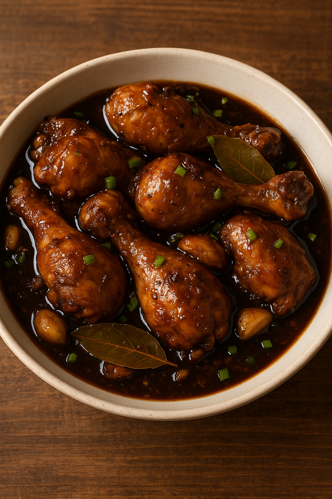

Adobong Manok

Description:
Adobong manok is a classic Filipino dish made by braising chicken in a savory blend of soy sauce, vinegar, garlic, peppercorns, and bay leaves. Known for its rich, tangy, and slightly sweet flavor, it's one of the most beloved comfort foods in the Philippines and a staple in many Filipino households.
Ingredients:
- 1kg chicken (cut into serving pieces)
- 1/2 cup soy sauce
- 1/3 cup vinegar
- 1 medium onion, chopped (optional but commonly used)
- 6-8 cloves garlic, crushed
- 2-3 bay leaves
- 1 tsp whole peppercorns
- 1 cup water (adjust as needed)
- 1-2 tbsp cooking oil
- 1 tbsp cooking oil
- 1 tbsp brown sugar (optional for a slightly sweet finish)
- Salt and pepper to taste
Odin Recipes